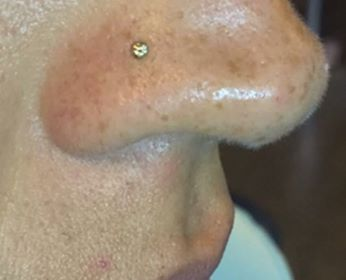
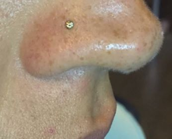

Artistas
VICTOR ECHENIQUE
(Barbero Profesional)
Victor, uno de los mejores Barberos Proesionales con más de 9 años en el mundo del de estilista y barbero. mas conocido por Rojocuts de una gran estilista, por lo que pasan por sus manos lo hace magia.Sus impecables cortes de pelo lo hacen ser una de las grandes referencias en la peluquería masculina, un buen hacer que deja patente a través de sus redes sociales..


ERIQUE SUAREZ
(Barbero Profesional)
Enrique es unos de nuestros Barberos moderno, exótico y con un punto canalla que conquista a todos y cada uno de los clientes que pasan por sus tijeras. Lo podrás encontrar en Barber Studio. ¿Su especialidad? El cabello afro y los tintes fantasía son verdaderas obras de arte.
SAUL ROJAS
(Tatuador Profesional)
Saúl , una leyenda del tatuaje con más de 25 años en el mundo del arte corporal, donde se exponen muestras de diferentes artistas tanto del mundo del tatuaje como del arte digital e ilustrativo. Barber Studio se enorgullece de ser unos de nuestros artistas y de satisfacer y exceder las expectativas de sus clientes, integrando un equipo que realiza diseños personalizados y disfrutan de convertir las ideas de sus clientes en arte.
PALOMA PAUCAR
(Tatuadora Profesional)
Paloma, Ser la hermana pequeña de una gran familia de tatuadores no fue tarea fácil para Paloma, día a día se probó a sí misma de que este arte era lo que realmente quería ser y por ello, hoy en día es una de nuestras mejores tatuadoras en Barber Studio que la ha visto crecer en cada una de sus piezas y exceder las expectativas de sus clientes, integrando un equipo que realiza diseños personalizados sus clientes en arte.

MORRI PIERCER
(Especializado en body piercing y microdermales.)
Morri, Desde 1999 se encuentra "Morri", uno de los pioneros del body piercing en el Perú. Asistiendo a los más importantes reuniones del mundo del piercing como lo son la "Asociación de Perforadores Profesionales" y "Latinoamerica Body Piercing" busca conocer nuevas técnicas, ideas y cuidados para mejorar y llevar un piercing con excelencia.
MELINA ORTIZ
(Especializada en body piercing.)
Melina, Asesorada por los más grandes del tatuaje y el body piercing en Perú, ¡Esta Meli!, una de las grandes exponentes del body piercing desde el 2001, sus conocimientos acerca de joyas, piercings y el famoso “piercing de la migraña (Daith)” la hacen un miembro único en Barber Studio. Ella ha viajado por el mundo para amar más aún este arte y ser parte de las “Latin America Piercer Girls”.
 
